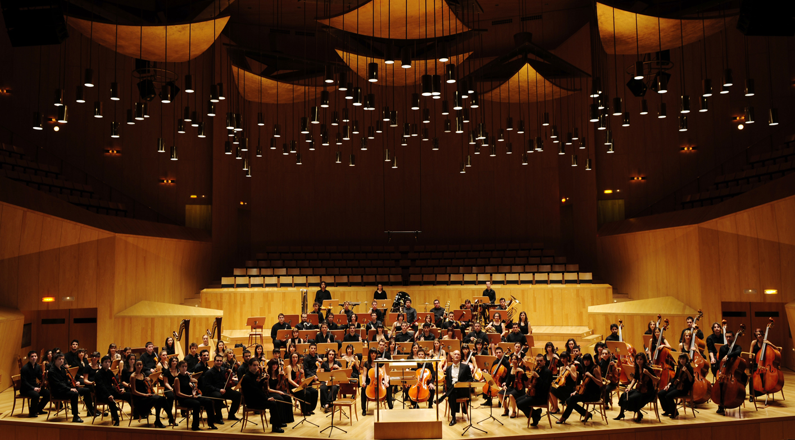

Se conoce como Rock a un conjunto de géneros variados de música popular, descendientes más o menos del Rock n' Roll
original nacido en los Estados Unidos en la década de 1950, como fruto de una fusión entre la música Country y el Rhythm and Blues.
corriente musical que se basa principalmente en la música producida o basada en las tradiciones de la
música litúrgica y secular de Occidente, principalmente Europa Occidental.

Una sinfonía es un tipo de composición musical extendida en la música clásica occidental y compuesta la mayoría de las veces para orquesta. Generalmente,
está dividida en cuatro movimientos, cada uno con un momento y estructura diferente.